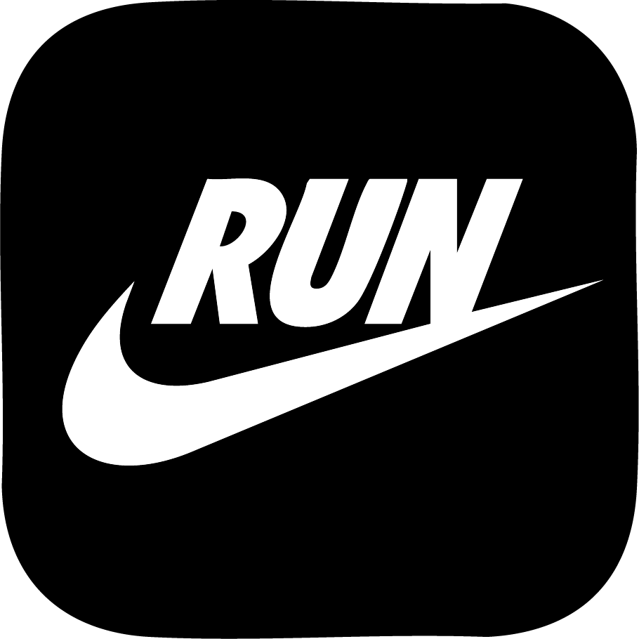

At-A-Glance
More Than Miles: Run With People Who Match Your Vibe
Many runners struggle to find compatible running buddies or groups. RunBuddy is a community-based app that helps people connect with others who match their pace, schedule, and running style. It focuses on compatibility and connection, making it easier to build consistent, supportive routines through shared runs.
I contributed by shaping interview questions, consolidating research insights, leading design decisions on usability and logistics, and building key prototypes following Apple’s Human Interface Guidelines.
My Role
UX Research
UX Design
UI Design
Skills
Secondary Research
Interviews
Consolidating data
Design Iterations
Context
8 weeks
Spring 2025
Academic Projects
Collaborators
Daniella Untivero
John Gallarate
John Lin
Marissa Manzanarez

The Problem
Unclear expectations keep runners from joining running groups
When runners aren't sure if a group matches their pace, social vibe, or goals, they hesitate to join. Past experiences with cliquey groups, feelings of comparison, or fear of holding others back made them feel discouraged. This uncertainty often stems from a lack of upfront information, leading runners to avoid joining entirely.
The Solution
Help Users Identify Compatibility Cues
Our research highlighted the importance of setting clear expectations. This includes not only pace but also group vibe, social dynamics, and emotional safety. Many participants preferred joining through friends because they felt more confident about fitting in. Others were drawn to larger groups, which they believed offered more diversity in pace and personality. These findings show that compatibility cues, such as shared values, flexibility, and social tone, are key to reducing hesitation and encouraging participation.
Feature 1
Onboarding Questionnaire
New users answer a few questions about their pace, preferences, and goals to help match them with compatible groups.
Feature 2
Group Exploration
Users browse local running groups with tags like “beginner-friendly,” “social,” or “goal-focused” to quickly find one that fits their style.
Feature 3
Drop a Review
Users leave quick feedback after a run using emojis, tags, and optional comments. This keeps it easy and helps others gauge group compatibility.
Literature Review
Clarity and Connection Make the Difference
We conducted a literature review to understand the challenges people face when joining running groups. We found that clear structure and a welcoming environment encourage people to join and continue participating, while uncertainty can discourage new runners. Building social connections was also identified as key to helping people stick with the habit. Based on these insights, we hypothesized that runners may need better ways to find compatible groups and build meaningful connections.
“Building social connections helps people keep running. When runners form friendships and feel supported, they are more likely to stay motivated and stick with the habit.”
“Clear structure and a welcoming group encourage people to join and stay. Scheduled runs, clear expectations, and emotional safety make runners feel more comfortable and committed.”
“Too much uncertainty can stop new runners from joining. When people don’t know what to expect or worry about fitting in, they are less likely to join.”
Competitive Analysis
Guiding Product Direction Through Analysis
After reviewing the literature and defining the problem space, we conducted a competitive analysis to identify opportunity areas and guide product direction. The analysis showed that our product is best suited for runners who value meaningful connections with compatible partners or groups.
| Feature |  Nike Run Club | Strava | Meetup |
|---|---|---|---|
| Compatibility Matching | ❌ | ❌ | ❌ |
| Find Compatible Group | ❌ | ❌ | ✅ |
| Clear Expectations About Group | ❌ | ❌ | ✅ |
| Social Connection | ❌ | ✅ | ✅ |
| Group Running Support | ✅ | ✅ | ✅ |
| Beginner-Friendly | ✅ | ❌ | ✅ |
| Performance Tracking | ✅ | ✅ | ❌ |
| Event Coordination | ✅ | ✅ | ✅ |
| Scheduling Flexibility | ✅ | ✅ | ✅ |
| Local Discovery | ✅ | ✅ | ✅ |
User Interview
Interviewed 10 Runners to Understand Barriers to Joining Group Runs
After secondary research, we conducted semi-structured interviews to explore how novice to intermediate runners discover and join group runs. We focused on social dynamics, motivation, emotional safety, and uncertainty. The goal was to understand what helps runners feel supported, confident, and connected in group settings.
Demographics
- 10 participants
- Ages 23–38
- Casual to intermediate runners
- Included club pacers
- Solo and group preferences
- Mixed use of apps and wearables
Methodology
- Semi-structured interviews
- Focused on how runners find and join groups
- Explored engagement and retention
- Qualitative, exploratory approach
Research Focus
- Running habits
- Group compatibility
- Technology use
- Emotional safety
- Uncertainty in decision-making
- Ideal experiences and feature ideas
Descriptive Coding
Used inductive, descriptive coding to uncover themes on group compatibility, motivation, and emotional safety.
Following the interviews, we used descriptive coding to let themes emerge directly from the raw data. This helped us better reflect the participants’ voices, gain grounded insights, and mitigate potential biases.
Affinity Mapping
Understanding the Social Side of Running
After applying descriptive coding to label key observations
from the interviews, we used affinity mapping to cluster those
labels and uncover emerging themes. This process surfaced
insights such as:
– Social Fit & Vibes as a Primary Motivator
– Emotional Safety & Psychological Comfort
–
Reducing Uncertainty About Groups / Uncertainty as a
Barrier
These themes helped us better understand what drives or
hinders participation in group running experiences.

Pain Points
Pinpointing the Most Impactful Phase
After identifying key themes, we mapped them to pain points across the three phases of the group run experience: pre-run, during-run, and post-run. Based on the synthesized insights, we chose to focus our MVP on the pre-run phase. This stage presents the greatest opportunity to reduce uncertainty and social anxiety, which are key barriers that prevent runners from joining group runs and eventually affect the during-run and post-run experience as well.
Pre-run MVP Focus
- Unclear expectations
- Uncertainty about group fit
- Social anxiety and worry
During-run
- Mismatch in running pace
- Loss of confidence
- Feeling out of place
Post-run
- Lack of social interaction
- Awkwardness after the run
User Spectrums
Mapping User Variations
After identifying key pain points, we created user spectrums to explore variations in attitudes, behaviors, and preferences. This step helped us better understand how users differ in their feelings toward social fit, logistical confidence, running experience, and age. By mapping these differences along spectrums, we were able to build more inclusive and representative personas. This approach ensured our personas reflected real diversity within our user base, rather than oversimplifying them into fixed categories.

Personas
Understanding Our Runners
To better understand user needs, I developed personas like Claire and Kelly. Claire is a novice runner who worries about her pace, fitting in, and being judged. She looks for groups with clear expectations and a friendly atmosphere. Kelly is an intermediate runner who values supportive, low-pressure groups that match her pace and social preferences. Both show the importance of upfront compatibility cues and social reassurance to help people feel more confident about joining.
How Might We
Design Charrette
Explore Possible Solutions
Based on our “How Might We” prompt, we explored a wide range of ideas and prioritized them according to how well they aligned with our design goals. While we considered options such as emotion-based search, past runner reviews, first-time runner badges, and MBTI-style matching, we ultimately selected the onboarding questionnaire as our MVP. This questionnaire prompts users to answer social fit–related questions, such as preferences around pace, personal goals, and group atmosphere, to support better alignment. We also included past reviews as a supporting feature. This direction was chosen because it allows us to collect meaningful user data early and reduce uncertainty, both of which are essential for building trust and ensuring compatibility, especially for first-time participants.
Prototyping
Low-fi Wireframes
Our proposed solution includes features designed to tailor content based on social compatibility and logistical preferences, while continuously improving the experience through user feedback.
- Onboarding Questionnaire – captures user pace, goals, and preferences.
- Group Exploration – lets users browse and find compatible groups.
- Drop a Review – gathers lightweight feedback to improve future recommendations.

Test
Unmoderated Usability Testing
We conducted three rounds of unmoderated usability testing, including a pilot test, to support rapid iterations and refine our content, navigation, and interactions. Participants ranged in age from 18 to 50 and were beginner to intermediate runners, which aligned with our target audience. They completed tasks such as locating specific content and navigating between sections. After each task, they answered a brief post-task questionnaire. At the end of the session, we used the System Usability Scale (SUS) to assess content clarity and evaluate overall usability.
Iterations
Two Major Improvements
Clear Compatibility Cues
User feedback showed the group section felt dense, but the compatibility details were helpful. We added a compatibility badge and adjusted hierarchy to improve scannability and help users feel more confident joining a group.
Fewer Steps, More Accuracy
We removed questions unrelated to group matching to reduce friction. Some users felt the flow was too long, so we streamlined it by keeping only questions linked to tags that reflect group vibe. This improves efficiency without sacrificing matching quality.
Reflection & If We Had More Time
Secondary Research Helped Us Narrow Scope
We used literature reviews to identify key problem spaces, define our MVP, and back design decisions. Combining this with interview data helped us focus on what matters and create a product that stands out in the market.
Expert Reviews and Usability Testing
We asked peers to review our prototype during class, which surfaced early usability issues. Conducting this before usability testing allowed for quick iteration and avoided obvious friction points.
Design System Improved Iteration
A shared design system enabled faster tweaks and updates. However, some component naming and structure could be improved to support better team alignment and UI consistency.
Future: Long-Term Observation
If we had more time, we’d test the app with real users over a longer period to see if it effectively supports runners in joining compatible groups and forming meaningful connections.